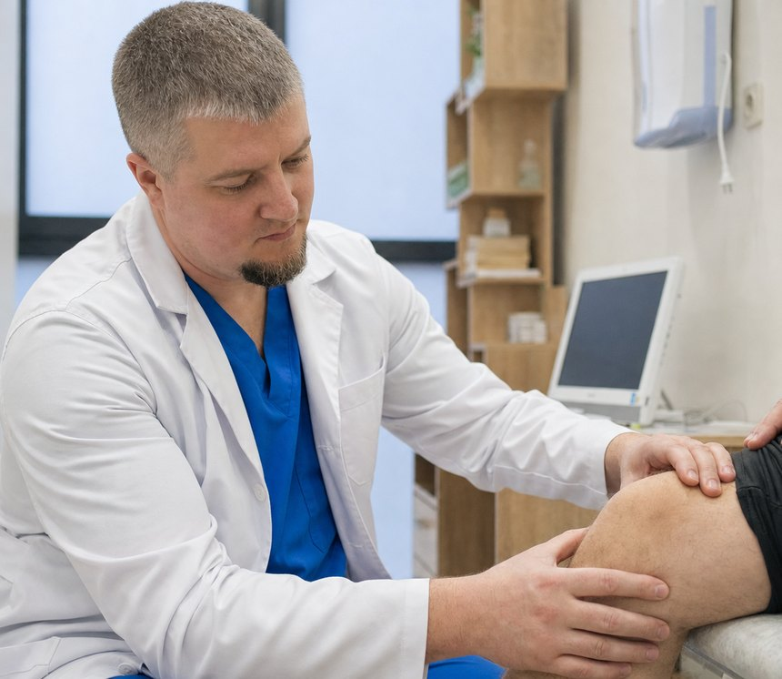
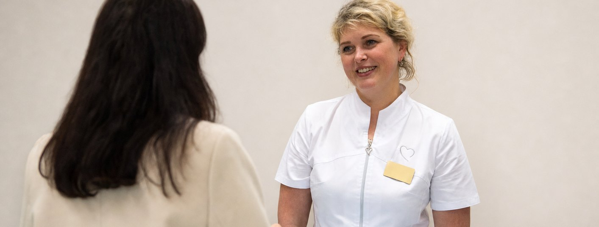

Все направления центра
В карточке направления — список услуг, врачи и цены из утверждённого прайса.
Методики, ради которых к нам приходят
Для каждой из них — отдельная страница: показания, противопоказания, как проходит процедура и что входит в стоимость.

SVF- и PRP-терапия суставов
Регенеративные методики, которые травматолог-ортопед может предложить при артрозе и хронической боли в суставах, если видит для этого показания.
- PRP — введение собственной плазмы, обогащённой тромбоцитами
- SVF-PRP — комбинация плазмы и стромально-васкулярной фракции из собственной жировой ткани
- Решение о методе — после осмотра и обследования

Лазерная и регенеративная гинекология
Лазер, PRP и регенеративные препараты при сухости, атрофии, изменениях после родов и лёгком стрессовом недержании.

Ботулинотерапия в неврологии
При хронической мигрени, блефароспазме, спастичности и дистонии. Часть процедур — под УЗИ-навигацией.
Не знаете, к какому врачу?
Подскажем, к кому записаться
Позвоните или оставьте заявку: администратор с учётом ваших жалоб подскажет, к какому специалисту записаться, и подберёт удобное время.
По вопросам женского здоровья можно сразу записаться к акушеру-гинекологу.
Подсказки справа — ориентир, а не диагноз. При острой боли, высокой температуре, кровотечении или резком ухудшении самочувствия вызывайте скорую помощь: 103 или 112.
Частые поводы обратиться и специалист, с которого обычно начинают:

Приём специалистов
Стоимость консультаций терапевта и узких специалистов. Цены по остальным направлениям — на страницах направлений и в разделе «Стоимость».
Частые вопросы
Не нашли ответ? Позвоните: +7 (913) 55-88-711
Нужно ли направление, чтобы записаться к узкому специалисту?
Нет, на платный приём можно записаться к любому врачу центра напрямую. Если вы не уверены, какой специалист нужен, администратор с учётом ваших жалоб подскажет, к кому записаться.
Можно ли пройти приём и обследование в один день?
Часто — да. УЗИ, ЭКГ, забор анализов и многие процедуры выполняются в центре. Администратор постарается подобрать время так, чтобы приём и обследование прошли за один визит, если в этот день работают нужные специалисты.
Как быстро можно попасть к врачу?
Мы постараемся записать вас на ближайшее удобное время с учётом срочности вашего вопроса. Готовность лабораторных анализов — от 1 рабочего дня до 1 месяца в зависимости от исследования.
Где посмотреть все цены?
Полный прайс с поиском по услугам — на странице «Цены». На страницах направлений приведены цены по соответствующему разделу. Стоимость препаратов и расходных материалов указывается отдельно, если не оговорено иное.